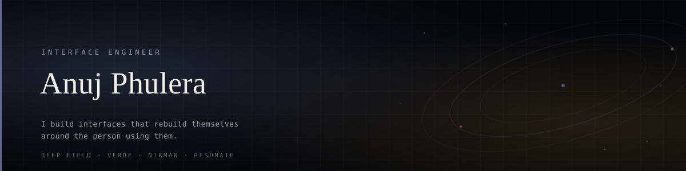

Hi, I'm Anuj.
I build interfaces that rebuild themselves around the person using them.
Most websites show everyone the same page. Mine watch how you move — where you linger, what you skip, how fast you read — then restructure their own layout, hierarchy and navigation to match. Two people leave a different website behind.
◈ Right now
- 🔭 Building DEEP FIELD — a cosmos atlas with no fixed interface. Six structural paradigms, eleven live behavioural signals, and an engine that explains every decision it makes.
- 🌱 Growing VERDE — a vertical farm that waters itself. ESP32 firmware, a TensorFlow Lite disease classifier, and a custom PCB.
- ⚡ Shipping CommitQuest — reads any GitHub profile like a scorecard and hands you quests to fix what's missing.
◈ Selected work
DEEP FIELDA living atlas of the cosmos whose layout, hierarchy and navigation model are rebuilt at runtime around each visitor's behaviour — and which explains every change in plain English.
|
VERDE OSMission control for an autonomous vertical farm. Live ESP32 telemetry, an AI plant doctor, and every API key kept server-side behind five whitelisted routes.
|
NIRMANAn AI-powered e-waste pickup network for India. Three role dashboards, live routing, and a booking pipeline that runs end to end.
|
SKILLVERSETurns screen time into skill time. Thirty-four routes, eight AI analysis pipelines, and a 250-respondent research dataset behind every product claim.
|
COMMITQUESTScans a GitHub profile, scores the balance of your contribution types, and hands you quests to unlock whatever's missing. Zero dependencies, 53 assertions.
|
RESONATEA cinematic platform about algorithmic empathy. Custom GLSL shaders, ~25 pages of scroll-driven narrative.
|
◈ What I actually spend my time on
Interfaces that change shape are easy to make unusable. The interesting problem isn't the reshuffling — it's earning the right to reshuffle.
So DEEP FIELD only reconstructs itself when the engine has evidence (a confident read, a clear margin over the runner-up) and never more than once every nine seconds. It shows you what changed and why. It lets you pin a structure and switch the engine off. And it never loses your place.
That constraint — adapt, but never at the cost of trust — is the thing I care about. Everything I build is an argument for it.
◈ The stack
Jaipur, India · building things that shouldn't fit in a browser tab
<picture> with
prefers-color-scheme, so GitHub serves the dark banner to dark-mode visitors and the
light one to light-mode visitors. Hit ☀︎ / ☾ above to see it happen.